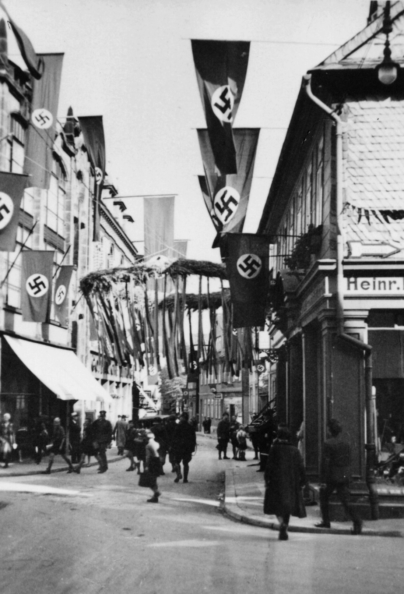
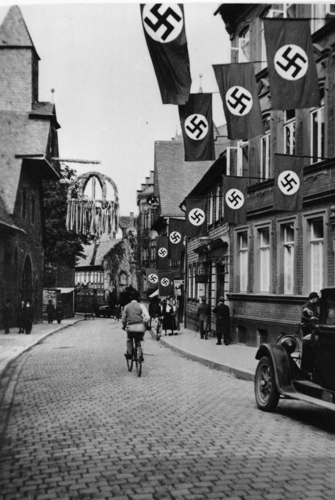

Goslar in der NS-Zeit
Bahnhof
Den Bahnhofsvorplatz verlassend sehen Reisende rechterhand die Klubgartenstraße und kommen auf dem Weg Richtung Innenstadt, das Hotel Achtermann
und die Neuwerkkirche passierend, in die Rosentorstraße. In seiner letzten Amtshandlung ordnete der langjährige
Oberbürgermeister Klinge am 30. März 1933 die Umbenennung beider Straßen an: Adolf-Hitler-Straße hieß nun die Innenstadtmeile,
v. Hindenburgstraße die Klubgartenstraße. Die Adolf-Hitler-Straße wurde zur NS-Aufmarsch- und Propagandaschneise durch die Innenstadt. Mit diesem
symbolischen Akt trieb die Unterdrückung der NS-Opponenten unter den Parolen „Die Abrechnung naht“ (NS-Führer Heinrich Droste) „Nur jetzt
nicht weich werden“ (GZ-Redakteur Martin Raack) ihren ersten Höhepunkten zu.
Wenige Tage später wurde Klinge wie alle republikanischen Ratsmitglieder von der NSDAP-Mehrheit aus dem Gremium verjagt. Bei den Gemeindewahlen am 12. März 1933 hatten bei einer hohen Beteiligung von über 88 Prozent 60,6% der Wähler*innen für die NSDAP gestimmt, ihre Partner von der Kampffront schwarz-weiß-rot erhielten 14,1%, die SPD kam auf 20,8%, die KPD auf 3,6%. Damit war den neuen lokalen Herrschern die Legitimation des Wahlvolks erteilt. Republikaner, Sozialdemokraten und Kommunisten wurden verfolgt, und verhaftet – mancher kam zu Tode.
Aus städtischen Betrieben, der Verwaltung und der Polizei wurden republiktreue Angestellte und Arbeiter*innen entlassen, sozialdemokratische Betriebsräte und Vertrauensleute aus Firmen geworfen. Das Gewerkschaftshaus wurde von Nazis besetzt, die Parteiorganisationen der Arbeiterbewegung zerschlagen. Am 1. April 1933 wurde der reichsweit organisierte Boykott gegen Juden auch in Goslar unter Leitung eines „Aktionsausschusses zur Abwehr der Judenhetze“ umgesetzt, begleitet von antisemitischer Hetze in der Lokalzeitung und auf Versammlungen.
Wenige Tage später wurde Klinge wie alle republikanischen Ratsmitglieder von der NSDAP-Mehrheit aus dem Gremium verjagt. Bei den Gemeindewahlen am 12. März 1933 hatten bei einer hohen Beteiligung von über 88 Prozent 60,6% der Wähler*innen für die NSDAP gestimmt, ihre Partner von der Kampffront schwarz-weiß-rot erhielten 14,1%, die SPD kam auf 20,8%, die KPD auf 3,6%. Damit war den neuen lokalen Herrschern die Legitimation des Wahlvolks erteilt. Republikaner, Sozialdemokraten und Kommunisten wurden verfolgt, und verhaftet – mancher kam zu Tode.
Aus städtischen Betrieben, der Verwaltung und der Polizei wurden republiktreue Angestellte und Arbeiter*innen entlassen, sozialdemokratische Betriebsräte und Vertrauensleute aus Firmen geworfen. Das Gewerkschaftshaus wurde von Nazis besetzt, die Parteiorganisationen der Arbeiterbewegung zerschlagen. Am 1. April 1933 wurde der reichsweit organisierte Boykott gegen Juden auch in Goslar unter Leitung eines „Aktionsausschusses zur Abwehr der Judenhetze“ umgesetzt, begleitet von antisemitischer Hetze in der Lokalzeitung und auf Versammlungen.


Adolf-Hitler-Straße beim Empfang zum Erntedank
Bild: Stadtarchiv Goslar ZG A16 k83 und 16m83
Bild: Stadtarchiv Goslar ZG A16 k83 und 16m83

Adolf-Hitler-Straße beim Empfang zum Erntedank
Bild: Stadtarchiv Goslar ZG A16 k83 und 16m83
Bild: Stadtarchiv Goslar ZG A16 k83 und 16m83